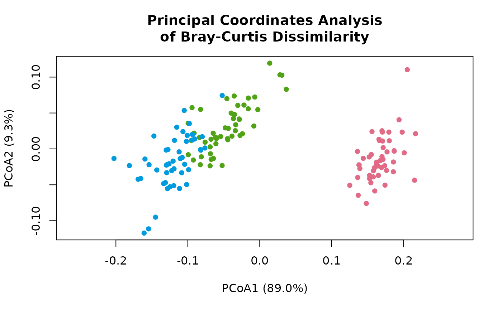
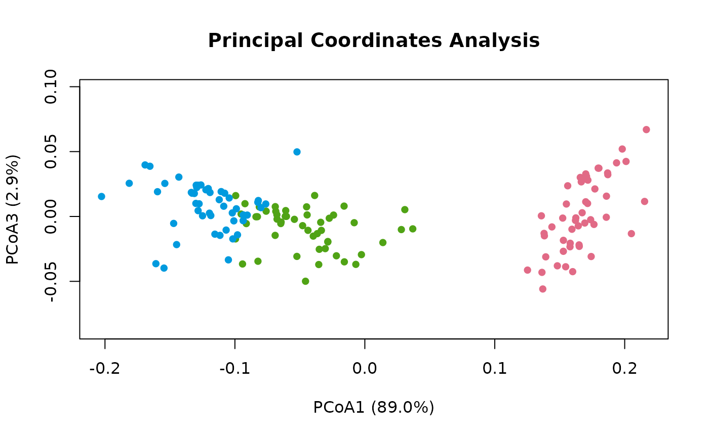
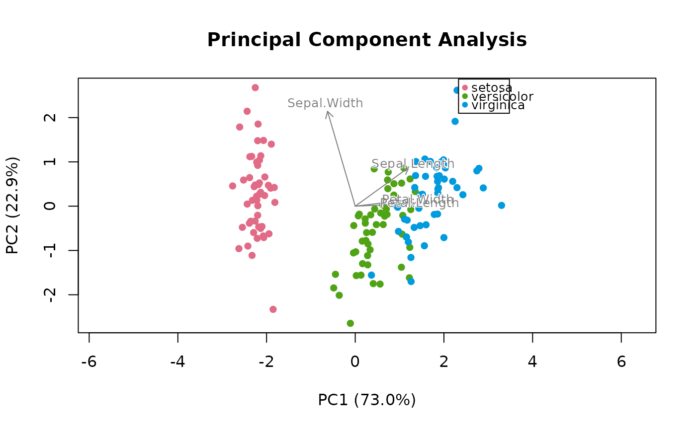
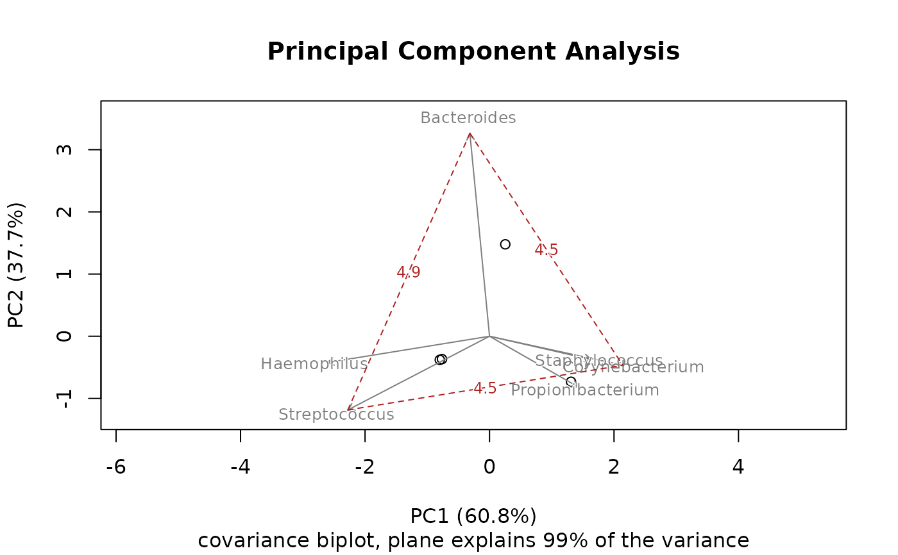
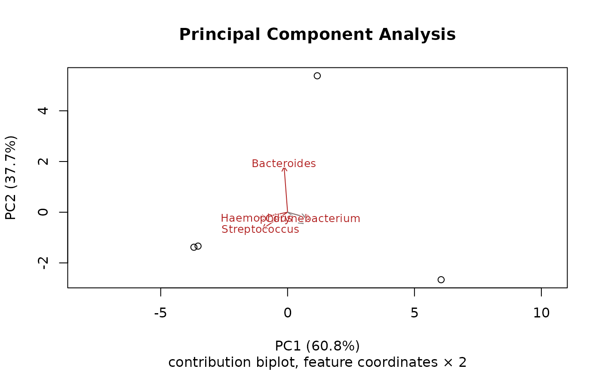
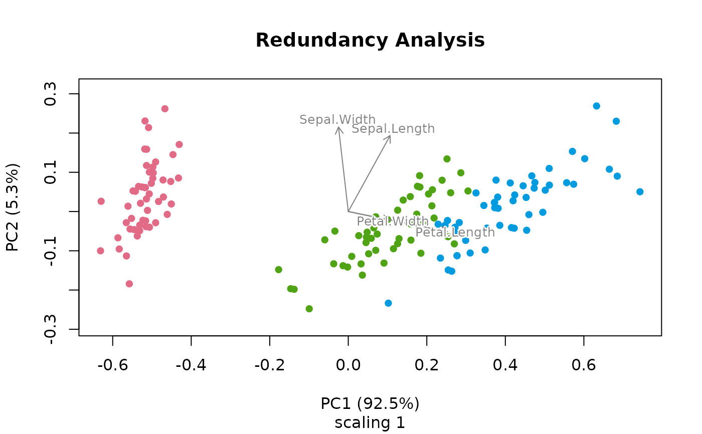
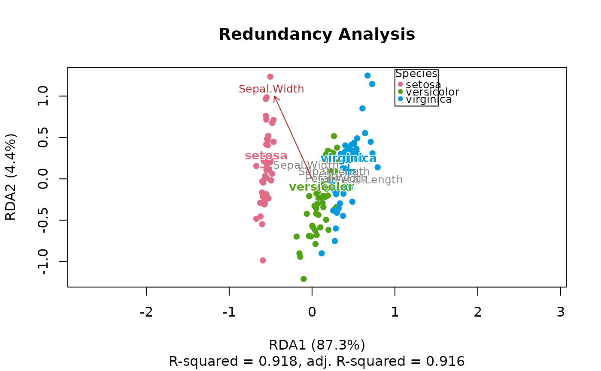
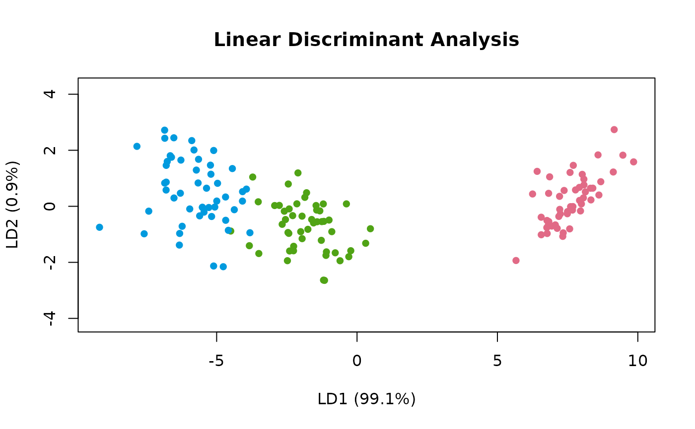

Draws the samples on two axes of an ordination from pcoa(), pca(),
dbrda(), procrustes() or any other of ecodive's ordination methods,
with the title, axis labels and subtitle taken from the result's
attributes. The overlays the result holds are drawn on top of the samples:
feature loadings, the arrows of numeric constraints, factor or group
centroids, and the target of a Procrustes rotation. Nothing is recomputed:
this is a quick look at results already in hand.
Arguments
- x
An ordination result: a matrix of class
ecodive_ord, fromdist_ord(),count_ord(),pcoa(),mds(),nmds(),isomap(),tsne(),umap(),dbrda(),capscale(),rda(),cca(),ca(),pca(),rpca(),rpca_phylo(),lda(),plsda(),oplsda(), orprocrustes().- groups
Colours the samples by group, with a legend: the name of a column of
data, or a vector with one value per sample (matched to the samples by name when both are named, as forpermanova()). A factor, character or logical vector gives each value its own colour, in the order of a factor's levels; a numeric vector gives a colour gradient (convert it withfactor()for one colour per value). A factor's unused levels keep their colours, so that plots of subsets match, but are left out of the legend. By default, the groups thatlda(),plsda()andoplsda()store in theirgroupsattribute, if any.- data
A data frame of sample metadata, with one row per sample (matched by row name, else in order), when
groupsnames one of its columns.- axes
Which two axes to plot, by number, as in
envfit(). Defaultc(1, 2). A result with only one axis (such aslda()of two groups) is drawn as a strip chart, with one strip per group (in which caseaxesis not used).- loadings
How many of the features in the
loadingsattribute to draw, those furthest from the origin on the plotted axes first: a number,Inf(orTRUE) for all, or0(orFALSE) for none. Default10. Drawn as arrows forpca(),rpca(),rpca_phylo(),rda(),plsda()andoplsda(), and as labelled points for the species scores ofca()andcca(). Withscaling = 'contribution', those contributing most to the plane first.- biplot
Whether to draw the arrows of the constraints in the
biplotattribute ofdbrda(),capscale(),rda()andcca(). Those of factor levels are left out whencentroidsare drawn. DefaultTRUE.- centroids
Whether to label the points in the
centroidsattribute: the centroid of each factor level of a constrained ordination, or of each group ofplsda()andoplsda(). DefaultTRUE. Those of the plottedgroupsare labelled with the group and drawn in its colour.- target
For
procrustes(), whether to draw an arrow from each sample to its place in thetargetattribute, the ordination it was fitted to. DefaultTRUE.- legend
Where to put the legend of
groups: a keyword forgraphics::legend(), such as"topright"(the default) or"bottomleft", orNULLfor none.- col
The points' colours. Without
groups, passed toplot()as given, so thatcol = iris$Speciesworks as for any matrix. Withgroups, one colour per group (in order, or named by group); for numericgroups, the colours of the gradient, from low to high. Defaults togrDevices::hcl.colors()'s"Dark 3"palette for groups and its"Viridis"palette for a gradient.- pch
The points' symbols, as for
plot(). Default1(open circles), or16(filled circles) withgroups.- scaling
How the samples and features of a biplot are scaled against each other (see "Compositional biplots" and "Scalings of rda(), cca() and ca()" below):
For
pca(),rpca()andrpca_phylo():'form'(or1), the default;'covariance'(or2); or'contribution'.For
rda(),cca()andca():vegan's scaling1(or'sites'),2(or'species'), the default, as the result is stored, or3(or'symmetric').
Default
NULL: the default of the method, which draws the result as it is stored. Other ordinations take noscaling. Names may be abbreviated ('cov'), and'form'and'covariance'also stand for 1 and 2 withrda(),cca()andca().- links
Features to join with dashed links in a covariance biplot (
scaling = 'covariance') ofpca(),rpca()orrpca_phylo(): a vector of at least two features (names or positions in theloadings), every pair of which is linked, or a two-column matrix of pairs of them. Each link is labelled with its length, which approximates the standard deviation of the log ratio of its two features (see "Compositional biplots"). The linked features are drawn whateverloadingsis. DefaultNULL, for none.- ...
Passed on to
graphics::plot.default(), such asmain,sub,xlab,xlim,asporcex. They replace the defaults made fromx. To leave out the axes, usexaxt = "n"andyaxt = "n", sinceaxeschooses which axes to plot.
Details
The plot is made of what x holds:
Title: the ordination's title (see ecodive_display): the method's name, as
list_dist_ords()andlist_count_ords()give it, and for an ordination of distances, the distances' metric, such as "Principal Coordinates Analysis of Bray-Curtis Dissimilarity".Axis labels: the axes' names, with the percentage of the variance each explains (the
propattribute), for methods that have one.Subtitle: how well the method fit, for methods that measure it: the
stressofmds()andnmds(), thekl_divergenceoftsne(), the \(R^2\) (r_squaredandadj_r_squared) of a constrained ordination,r2xandr2yofoplsda(), and thessofprocrustes(); and forpcoa(),isomap()andumap(), their settings.
The axes have the same scale (asp = 1), so that distances on the plot
are true to the ordination; give asp = NA to let each axis fill the
plot.
Arrows (loadings and constraints) are scaled to fit among the samples, as
in any biplot: only their directions and relative lengths have meaning.
Loadings and constraints are scaled separately. Centroids, and the
species scores of ca() and cca() (vegan's scaling 2), are drawn
where they are. The covariance and contribution biplots below draw the
features as rays from the origin, at their own coordinates.
Compositional biplots
A PCA of clr-transformed counts, pca(counts, norm = 'clr'), is
Aitchison and Greenacre's (2002) biplot of compositional data, which
Gloor et al. (2017) recommend for microbiome tables. With \(S\) the
scores, \(V\) the unit loadings and \(\lambda\) each axis's
variance (eig), each scaling draws the samples (rows) and features
(columns) on the plotted axes as:
scaling | Samples | Features | What reads off the plot |
'form' | \(S\) | \(V\), scaled to fit | distances between samples approximate their Aitchison distances |
'covariance' | \(S / \sqrt{\lambda}\) (unit variance) | \(V \sqrt{\lambda}\) | rays' lengths approximate the clr values' standard deviations; links, the log ratios' |
'contribution' | \(S\) | \(V\), times a round number | features far from the origin contribute most to the plane |
In each, a sample's coordinates times a feature's (divided by the
features' multiplier) are what the PCA fits for that sample and feature,
\(S V^T\). Aitchison and Greenacre's rules for the covariance biplot,
which hold for clr data (norm = 'clr', scale = FALSE):
A link between the tips of two rays approximates the standard deviation of the log ratio of those two features, \(\log(x_j / x_k)\); the label on each link drawn by
linksis its length on the plane. Over all axes the lengths are exact, so the plane approximates them from below: a short link can hide a large standard deviation on the other axes, and a long one cannot. Withvlr(),sqrt(vlr(counts))gives the exact values.Links are least-squares fits of the log ratios, as rays are of the clr values, and explain the same share of their variance. The subtitle gives that share (the plane's percentage of the variance). When it is under 50%, drawing
linkswarns that their lengths may greatly underestimate the standard deviations.The cosine of the angle between two links approximates the correlation of their log ratios: perpendicular links are uncorrelated log ratios, and parallel ones correlated.
Three features whose tips lie on a line, at distances \(\lambda\) (A to B) and \(\mu\) (B to C), suggest that the log contrast \(\mu \log A + \lambda \log C - (\lambda + \mu) \log B\) is nearly constant across samples; four that form a parallelogram A, B, C, D, that \(\log A - \log B + \log C - \log D\) is.
Links are log ratios only for clr data. Of a pca() with another norm,
or with scale = TRUE, they show standard deviations of differences of
the transformed values, and drawing them warns so. rpca()'s and
rpca_phylo()'s completed rclr tables are row-centred as clr data are,
so their links are log ratios, of the completed values; for
rpca_phylo(), those of the tree's nodes (branch-length-weighted
counts). Their prop, and so the subtitle's share, is relative to the
completed low-rank table, which overstates the fit to the data.
The contribution biplot (Greenacre 2013) draws each feature at its
contribution coordinates, which for an unweighted PCA such as
pca()'s are the unit loadings \(V\) themselves: the squared
coordinate on an axis is the feature's share of that axis's variance. It
differs from 'form' only in using a fixed, round multiplier, given in
the subtitle ("feature coordinates \(\times\) 20"), so that lengths
can be compared between plots, and in highlighting and labelling the
features whose contribution to either plotted axis is above the average,
\(1/p\) for \(p\) features. loadings then counts features by
their contribution to the plane, \((\lambda_a v_{ja}^2 + \lambda_b
v_{jb}^2) / (\lambda_a + \lambda_b)\), rather than by length.
Scalings of rda(), cca() and ca()
rda(), cca() and ca() store vegan's scaling 2 (species scaled by
their eigenvalues), drawn by default. scaling = 1 scales the sites by
the eigenvalues instead (so that distances between sites approximate
their Euclidean or chi-square distances), and scaling = 3 splits the
scaling between the two, as vegan::scores(x, scaling = 1) and 3 do:
each axis's site scores, centroids and constraints are multiplied by
\(f\) or \(\sqrt{f}\), and its species scores divided by them,
where \(f = \sqrt{\lambda / \mathrm{trace}}\) for rda() and
\(\sqrt{\lambda}\) for cca() and ca(). The subtitle names the
scaling when one is given.
Base graphics draw on the current device, so further points, text or
arrows can be added on top. Use envfit()'s plot method, plot(fit, add = TRUE), to add fitted variables.
References
Aitchison, J., & Greenacre, M. (2002). Biplots of compositional data. Journal of the Royal Statistical Society: Series C (Applied Statistics), 51(4), 375-392. doi:10.1111/1467-9876.00275
Greenacre, M. (2013). Contribution biplots. Journal of Computational and Graphical Statistics, 22(1), 107-122. doi:10.1080/10618600.2012.702494
Gloor, G. B., Macklaim, J. M., Pawlowsky-Glahn, V., & Egozcue, J. J. (2017). Microbiome datasets are compositional: and this is not optional. Frontiers in Microbiology, 8, 2224. doi:10.3389/fmicb.2017.02224
See also
envfit() and its plot method, plot(fit, add = TRUE), to add
fitted variables to an ordination plot.
Examples
# Colour by a column of metadata, with a legend.
ord <- pcoa(bray(iris[, 1:4]))
plot(ord, 'Species', iris)

# The third axis instead of the second.
plot(ord, 'Species', iris, axes = c(1, 3))

# A PCA biplot: the loadings as arrows.
plot(pca(iris[, 1:4], scale = TRUE), iris$Species)

# A compositional (covariance) biplot, with links whose lengths
# approximate the standard deviations of log ratios.
ord <- pca(ex_counts, norm = 'clr', pseudocount = 1)
plot(ord, scaling = 'covariance',
links = c('Streptococcus', 'Bacteroides', 'Corynebacterium'))

# The features that contribute most to the plane.
plot(ord, scaling = 'contribution')

# vegan's scaling 1 of an RDA.
plot(rda(iris[, 1:4]), iris$Species, scaling = 1)

# A constrained ordination: centroids of each species, and an arrow
# for the numeric constraint.
ord <- rda(iris[, 1:4], data = iris, formula = ~ Species + Sepal.Width)
plot(ord, 'Species', iris)

# Supervised methods colour by their own groups.
plot(lda(iris[, 1:4], 'Species', iris))

# Any argument of plot() still works.
plot(nmds(bray(iris[, 1:4]), seed = 1), col = 'grey40', main = 'NMDS')